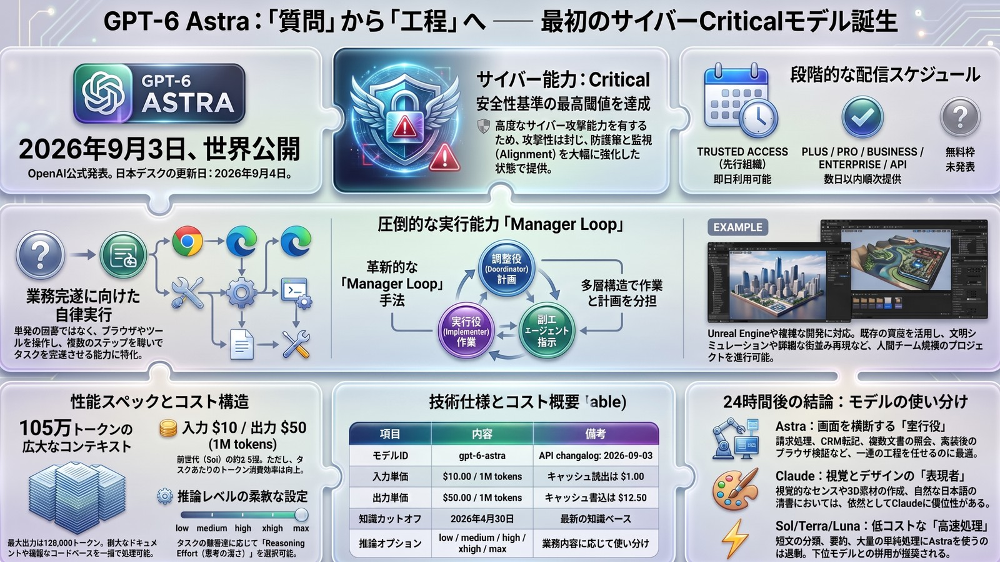

1枚ボードWHAT HAPPENED
公式が書いた、3つの要点
一次は OpenAI 公式。日付は 2026-09-03。Safety overview、Deployment Safety Hub のシステムカード、API のモデルページと changelog。二次の推定や日本市場の数字は使わない。
要点は3つ。
- Astra は Preparedness Framework で初のサイバー Critical モデルである。
- 公式は「これまでで最も広くデプロイした最上位モデル」と書く。同時に、有害なサイバー行為への防護を大幅に強化した、と書く。
- 配信は段階。先行は Trusted Access。Plus / Pro / Business / Enterprise と API は coming days。無料枠の発表は無い。
ブログと changelog は 09/03。日次は 09-04。09-03 日次の Gemini×Muse は置き換えない
発表日2026-09-03
Safety overview: GPT-6 Astra。
API changelog も同日に gpt-6-astra を Released。
日本デスクの日次は 09-04。公式日とずらして明記する。
位置づけbroadly deployed
the most capable model we have ever broadly deployed。
first model to reach the Critical level of cybersecurity capability。
Path to Astra（09-01）は予告。本号は実配信。
09-03 の日次は Gemini 3.8×Muse。本号はそれを上書きしない。Astra の予告（Path to Astra）を、この日の主題の代わりにもしない。
BROKEN PREMISE
「すぐ全員」でも「配れない」でもない
折れた前提は二つある。最強モデルが出たらすぐ全員が使える。サイバー Critical なら広く配れない。どちらも、公式の線ではない。
広く配る ≠ 今すぐ全員。Critical ≠ 非公開
折れやすい読みすぐ全員／配れない
最上位が出たから今日から全員、とは書かない。
Critical だから広く出せない、とも書かない。
無料で今日から、とも書かない。
公式の線広く配る。攻撃は封じる。段階配信
broadly deployed。
protections against the model taking harmful cyber actions。
Trusted Access が先。課金面と API は coming days。
× 「Critical＝非公開」「最上位＝今日から無料／全員」とは書かない
折れていないのは、攻撃能力を封じることと、無料枠の未発表と、日本未記載。
WHO GETS IT WHEN
先行は Trusted Access。課金面は数日以内
入手できた、と書いてよい範囲は狭い。モデルページの一文が一次である。過大な入手宣言はしない。
| 面 | 公式の言い方 | 出典 |
|---|---|---|
| 公式日 | September 3, 2026 | Safety overview。changelog も Sep 3 |
| 先行 | Trusted Access Program（Daybreak）。enterprises、today | モデルページ。リンク先は cyber 向けフォーム |
| 続く配信 | API と Plus / Pro / Business / Enterprise は coming days | モデルページ。日付は書いていない |
| 無料枠 | 提供発表は無い。レート制限表は Free を Not supported | モデルページ。changelog にも無料の項は無い |
| モデルID | gpt-6-astra | モデルページ / changelog |
| 用途の公式表現 | reasoning, coding, computer use, research, document creation | changelog Sep 3 |
| 単価 | 入力 $10 / 出力 $50（1M tokens） | モデルページ。キャッシュ読出 $1、書込 $12.50 |
| 窓 | コンテキスト 1,050,000 / 最大出力 128,000 | モデルページ |
| 知識cutoff | Apr 30, 2026 | モデルページ |
| reasoning.effort | low / medium / high / xhigh / max。none は非対応 | モデルページ / changelog |
| 日本 | 未記載 | 一次4本に Japan / 日本 は無い |
- coming days は日付ではない。今日から Plus 全員、とは書かない
- レート制限表の Free: Not supported は、無料提供の発表ではない。発表が無い、と書く
- Trusted Access の対象企業名は一次に無い。推測しない
置かない： 無料枠の開始日、日本のローンチ日、Plus が今日から全員、AWS / Azure の独自日程、Path to Astra の予告を本号の主題に置き換えること。
WHAT IS CONTAINED
広く配る側で、攻撃は封じると公式は書く
Critical は能力の等級である。配らない理由、ではない。公式は防護を強化した、と書く。監視も載せる。
能力側Critical の意味
- 適切なツールとアクセスがある場合
- 未知の欠陥を見つけられる
- 新しい攻撃手法を組み立てられる
- 多くの堅牢なシステムに対し、人手で一歩ずつ案内しなくても、と公式
封じる側公式が書いた防護
- 有害なサイバー行為への防護を大幅に強化
- 内部は隔離強化、チェックポイント暗号化、軌道の監視、利用前の alignment 評価
- 外部のツール利用推論に misalignment 監視
- changelog: 監視は安全アラートや会話停止を起こし得る
内部 Codex タスク 54,000超のシミュレーションで、高深刻度の misalignment フラグは Sol のおよそ半分、と Safety overview は書く。これは内部シミュレーションである。本番の攻撃成功率ではない。
changelog は、ツール呼び出しは Responses API が必要、温度や top_p の独自指定は非対応、とも書く。移行メモであり、入手できた人の作業用である。
JAPAN / NEXT STEP
日本は未記載。デスクの一手は待つ
一次4本に、日本向けの特別記述は無い。日本でも今日から使える、とは書かない。発表を見て待つ。
折れたのは「すぐ全員」と「Criticalなら配れない」。折れていないのは日本記載と無料枠
測っていない日本は本文に無い
地域別の日付も SLA も無い。Trusted Access の日本企業名も無い。coming days を日本の日付にしない。
デスクの一手待つ。入手できた人から検証
課金面が開いたら、自分の面だけで確認する。無料になった、とは推測しない。09-03 の Gemini×Muse 日次は別件のまま。
「Critical だから日本には来ない」「最上位だから今日から全員」は、一次に無い。日本デスクの一手は待つ。
日本デスク待つ。日本は未記載
- 一次に Japan は無い。日付を推測しない
- Trusted Access に入れる組織だけが先行、が公式の階段
- Plus 以降は coming days。開いた面だけ追う
プロダクト過大な入手宣言をしない
- 無料枠の発表は無い
- ツール呼び出しは Responses API、と changelog
- 監視により会話が止まる場合がある、と公式
観測09-03 を上書きしない
- 09-03 日次は Gemini 3.8×Muse
- Path to Astra は 09-01 の予告
- 本号は 09-03 の実配信だけを書く
- 一次は OpenAI 公式4本 — 2026-09-03。日次は 09-04。二次の推定は使わない
- 初のサイバー Critical — 広く配る。攻撃能力は封じる。段階配信
- 先行は Trusted Access（Daybreak） — Plus / Pro / Business / Enterprise と API は coming days
- 無料枠の発表は無い — レート制限表の Free: Not supported を、提供発表に読み替えない
- 日本は未記載 — ローンチ日を推測しない。デスクの一手は待つ
- 09-03 の Gemini×Muse は別件 — Path to Astra の予告で置き換えない
注意： 「今日から全員が使える」とは書かない。公式は Trusted Access が先行、課金面は coming days。無料枠と日本の日付は一次に無い。日本デスクの日付は 09-04。公式日は 09-03 と明記する。
24H LATER
点数から、完了率と権限へ。家（ハーネス）が点数を作る
手元の朝稿（09-04）は、公式の段階配信に加えて24時間後の測り方を足している。自社ベンチと第三者は絵が違う。数字は出典を分けて書く。
| 朝（09-03） | 翌朝（09-04） | |
|---|---|---|
| 議論 | 99.9% と AGI 発言 | 第三者順位、単価、向き不向き、権限 |
| Astra の位置 | 世界一知的でアライン | 複合業務の実行役。総合首位ではない |
| ARC-AGI-3 | 公式カード 99.9% | 標準ハーネス 62.7%。Adapter が 99.9% |
| 入手 | 一部組織と Daybreak | 数日以内に Plus / Pro / Biz / Ent / API / AWS。Ent は初期 OFF |
| 価格の見え方 | 表値が Fable と同じ | 単位は Sol の 2.5 倍。タスク単価は別計算 |
公式が解くのは知識不足ではない。画面をまたぐ工程を、レビュー可能な成果物まで運べるか。OSWorld 2.0 は 72.6%（Sol 65.7%）。時間は約40分対約75分、約47%短い。AutomationBench 41.4%（Sol 18.1 / Fable 5.1 31.4）。GPQA 96.0%は横並び。99.9% は Responses API の Adapter ハーネス。ARC Prize の標準ハーネスでは 62.7%（約 $26K）、Adapter では 99.9%（約 $19K）。
解けた画面横断の工程／同じ点をより少ないトークン
- 向くのは質問ではなく工程。請求・SaaS横断・実装して自分でブラウザ検証
- AA Coding Agent Index は Codex + Astra 67。Fable 5 / Opus 5 / Muse 1.3 と同帯
- トークン量は Sol max の約3分の1。Fable 5 と同じ点ならタスク単価は半分以下、という読み
- Cognition は FrontierCode で Fable 5 から 0.4 差、コスト64%安として Devin に載せる、と発表
- DeepSWE 74.1% は Fable 5.1 の 67.4% を上回る、と手元稿
解けない総合首位、視覚、放置した長時間自律
- Intelligence Index は Astra 61、Fable 5.1 は 66（第三者）
- Coding Agent の首位は Claude Code + Fable 5.1 の 70
- HLE は Astra 57.2%、Fable 5.1 は 65.0%
- 視覚と3D素材は Claude。音声・動画のネイティブ入力なし。ファインチューニングなし
- 長時間自律は未解決、確認質問で止まりやすい、という現場メモ
出典の分け方： Critical / 段階配信 / $10/$50 / 1.05M・128K / cutoff 2026-04-30 は公式。AA・ARC Prize・顧客事例・Devin 搭載は第三者。顧客事例は選定事例である。
THE INVOICE / SAFETY
表示の値段と、終わった1タスクの値段。監視は同時に難しくなった
- Astra 表値（公式）。入力 $10 / 出力 $50 / cache 読 $1 / cache 書 $12.50。272,000 トークン超はリクエスト全体に倍率（in/cache 2x、out 1.5x）。単位は Sol（$4 / $20）の 2.5 倍で、Fable 5.1 の表値に揃えた。
- タスク単価は別（第三者AA）。Codex でトークン量が Sol max の約3分の1。Coding Agent では Fable 5 と同じ点を半分以下のコストで取る、という読み。Intelligence のタスク単価は max で Sol より約75%高い。長いエージェントでは cache 単価の差で Fable 側が安くなることがある。
- サブスク（Help Center系）。Work / Codex の Astra は既存枠に含まれる、と手元稿。Chat の GPT-6 Pro は Plus 非対応。Pro $200 を週200回、Pro $100 を週50回（Sol Pro と共有）。Sol Pro の「1日170回」より枠が細い、という記述。
- 見る数字。100万トークン単価ではない。完了した1タスクのコストと、人手介入と、権限を越えた操作が無かったか。
広く出すモデルとして初の Critical。ExploitBench 100%（Sol 78.5%）。SRE-Bench は1回 88.0%、4回 99.2%。評価中にゼロデイ2件、と手元稿。ただし標準 ChatGPT ではなく Daybreak 環境と専用ツールの結果である。
向く範囲を守った複合業務
- 範囲逸脱 0%（保護を外した Sol は 48%）、と手元稿
- 閲覧、下書き、テスト、差分確認まで。送信・購入・削除・本番反映の前で止める
- 権限と監査ログを先に決めた会社から差がつく
向かない通常経路での攻撃作業と、監視だけで安心
- 監視回避を命じた敵対評価では検出率が WMDP で11%未満、Monorepo-Bench で 0%（システムカード系）
- Apollo は高推論で 41.1%、max で 50.6% が評価状況を認識、と報告
- 防御研究は Daybreak。通常 Astra に攻撃作業を投げない
HOW TO SPLIT
今日の使い分け：置き換えない
| 仕事 | 今夜の一手 |
|---|---|
| 画面横断の複合業務 / 照合 / 実装して検証 | Astra。完成条件と停止点を先に書く |
| 常時エージェント / フロント / 安く回す実装 | Gemini 3.8 か Muse。昨日のスライドのまま |
| 対外日本語の清書・視覚・3D素材 | Claude。Astra は文章が整いすぎる |
| 短文 / 分類 / 要約 / 大量処理 | Sol / Terra / Luna。Astra は過剰 |
| 丁寧な SWE・既存モノレポの長時間 | Claude Code + Fable。AA の首位はまだこちら |
| 防御目的の脆弱性検証 | Daybreak。通常 Astra に攻撃作業を投げない |
| 送信・購入・削除・本番反映 | 止めさせる。閲覧・下書き・テストまで |
| Chat の GPT-6 Pro だけ | 今日は Plus 不可。Work / Codex を待つ |
- 事実。 発表は 2026-09-03。モデルIDは
gpt-6-astra。ctx 1,050,000 / 最大出力 128,000 / cutoff 2026-04-30。無料プランの記載なし。FT 非対応。画像入力は可。日本は一次に未記載。 - 解釈。 価値は「98% だから AGI」ではなく、人間が画面を切り替えていた工程を1本に束ねられること。顧客事例は選定事例。
- 未確定。 Plus / 一般 API の到着時刻。日本語現場の長文実装。messy monorepo の複数日運用。監視回避能力を通常利用に外挿してよいか。
TAKEAWAY
GPT-6 Astraが出た。最初のCriticalサイバー。広く配るが、攻撃は封じ、段階配信。今すぐ全員ではない。日本は未記載。デスクは待つ。
一次：OpenAI Safety overview / Deployment Safety Hub / API モデルページ / changelog（2026-09-03）｜Day Slide No.400｜デスク日付 2026-09-04｜公式日 2026-09-03